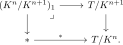
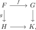
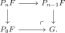
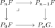

5.7. The Goodwillie tower of a topos
The acyclic product allows us to form powers of a congruence, just as one forms powers of an ideal in a commutative ring. The corresponding tower of quotients is a completion tower. Its successive layers already exhibit a stable phenomenon, and the special case associated with the \(\infty\)-connected maps recovers Goodwillie's tower of excisive approximations. The results of this section are due to Anel, Biedermann, Finster, and Joyal, principally [Anel et al. 2018, 2025].
5.7.1. Adic filtrations and their layers
Let \(K \in \Cong(T)\) be a congruence. By Theorem 5.84, congruences form a subalgebra of \(\Acyc(T)\). We can therefore form powers \(K^n\), giving congruences for all \(n \geq 0\) sitting in a chain
We call this the \(K\)-adic filtration. If \(K\) is of small generation, so are its powers, and the filtration gives a tower of quotient logoi
Let \((K^{n+1})^\perp\) denote the right class of the modality determined by \(K^{n+1}\). We define the \((n+1)\)-st layer of the filtration by
For \(X\in T\), let \((K^n/K^{n+1})_X\subseteq T_{/X}\) be the full subcategory spanned by the maps \(Y\to X\) in this class. At the terminal object, it can equivalently be described as the fiber

Thus an object of \((K^n/K^{n+1})_1\) is \(K^{n+1}\)-local and becomes terminal after localization at \(K^n\). The same description in the slice \(T_{/X}\) gives the layer at an arbitrary object \(X\).
A category is pre-stable if it admits pullbacks and pushouts and a commutative square is cartesian if and only if it is cocartesian.
Proposition 5.87. ([Anel et al. 2025, Theorem 4.2.11])
Let \(n \geq 1\) and \(X \in T\). The layer \((K^n/K^{n+1})_X\) is pre-stable and has a terminal object. Its category of pointed objects is stable.
Proof
We can apply the \(K\)-adic filtration to the specific case where \(K\) is the congruence of \(\infty\)-connected maps.
Let \(T\) be a topos. We define the \(n\)-th Goodwillie approximation of \(T\) as
This gives rise to a tower of logoi
By passing to right adjoints (geometric morphisms), this may alternatively be regarded as a filtration of \(T\) by subtopoi:
The terminology is justified by the comparison with excisive functors developed next.
5.7.2. Excisive functors and the Goodwillie comparison
We show that the topos-theoretic filtration recovers classical Goodwillie calculus when applied to functor categories.
Let \(C\) be a small category with finite colimits, and let \(T\) be a topos. The category \(C\) is filtered, so the colimit functor
preserves colimits and finite limits, since filtered colimits commute with finite limits in a topos. It is therefore a morphism of logoi. Its right adjoint is the constant-diagram functor \(X\mapsto\const_X\). This functor is fully faithful because \(C\) is weakly contractible, as follows already from the initial object of \(C\). Thus \(\colim\) is a quotient map.
Choose a small set \(\mathcal G\) of generators of \(T\), closed under finite products. For \(G\in\mathcal G\), write
A functor \(F\colon C\to T\) is constant if and only if it is local with respect to every map \(y_G(f)\colon y_G(Y)\to y_G(X)\), where \(f\colon X\to Y\) ranges through the morphisms of \(C\) and \(G\) ranges through \(\mathcal G\). Indeed, the corresponding locality map is obtained by applying \(\Hom_T(G,-)\) to \(F(X)\to F(Y)\), and the generators detect isomorphisms. Consequently, if
then the kernel \(K\) of \(\colim\) is the strong saturation \(\Sigma_T^s\).
We denote the monogenic-epigenic factorization of \(\colim\) as follows:
The middle term is the localization at the monogenic part \(K^{\mono}\). We use the notation \(\Shv(C\catop;T)\) because, for \(T=\An\), it is the logos of sheaves for the Grothendieck topology in which every morphism of \(C\catop\) generates a covering sieve. The notation in general denotes the corresponding \(T\)-valued sheaf logos.
We claim that the tower associated to the logos \(\Shv(C\catop; T)\) is precisely the tower of excisive functors. Recall the definition:
A functor \(F\colon C \to T\) is called excisive if it sends pushout squares in \(C\) to pullback squares in \(T\).
For \(n \geq 0\), we say \(F\) is \(n\)-excisive if it sends strongly cocartesian \((n+1)\)-cubes in \(C\) to cartesian \((n+1)\)-cubes in \(T\). Recall that an \((n+1)\)-cube \(X\colon [1]^{n+1} \to C\) is called strongly cocartesian if it is left Kan extended from its restriction to the \(n+1\) edges \(\{0\}^{k} \times [1] \times \{0\}^{n-k}\), and it is cartesian if it is a limit cone.
We denote by \(\Exc^n(C,T) \subseteq \Fun(C,T)\) the full subcategory of \(n\)-excisive functors.
For \(n = 0\), we see that a \(0\)-excisive functor \(F\) is one that sends any map \(X \to Y\) in \(C\) to a diagram \(F(X) \to F(Y)\) exhibiting \(F(X)\) as the limit of \(\{F(Y)\}\). This is precisely saying that \(F\) is a constant functor.
Let \(K\) be the kernel of the colimit functor \(\colim \colon \Fun(C,T) \to T\). Then there is an equivalence
In particular, if \(T\) is hypercomplete, we have an equivalence \(\Shv(C\catop; T)^{(n)} \simeq \Exc^n(C,T)\).
Proof
Let \(C = \An^{\fin}\) be the category of finite animae. Then the inclusion \(i\colon \An^{\fin} \hookrightarrow \An\) defines an \(\infty\)-connected object in the topos \(\Shv(\An^{\fin,\op})\). Moreover, it exhibits \(\Shv(\An^{\fin,\op})\) as the classifying topos for \(\infty\)-connected objects: for every topos \(T\), evaluation at \(i\) induces an equivalence of categories
Proof
In the same way, one can show that \(\Shv(\An^{\fin,\op}_*)\) classifies pointed \(\infty\)-connected objects.
This classification allows us to identify the layers of the Goodwillie tower with known categories of spectra.
The category \(\Exc^1(\An_*^{\fin},T)\) is equivalent to the total category of \(T\)-parametrized spectra:
Proof idea
The category \(\Exc^1(\An^{\fin},T)\) is equivalent to the total category of \(T\)-parametrized spectral torsors:
Here the right-hand side denotes the category whose morphisms consist of a map of base objects together with a compatible map of the pulled-back spectra carrying one section to the other.
Proof idea
5.7.3. Goodwillie equivalences and homogeneous layers
We conclude by translating the multiplicative properties of the adic filtration into familiar results about the Goodwillie tower. Let
be the left adjoint to the inclusion. By Theorem 5.92, this is localization at \(K^{n+1}\), where \(K:=\ker(\colim\colon\Fun(C,T)\to T)\). Thus a morphism is a \(P_n\)-equivalence precisely when it belongs to \(K^{n+1}\). Notice that this is a statement about the class inverted by \(P_n\), not about the right class of \(P_n\)-local morphisms.
We have
Proof
The generalized Blakers–Massey theorem now gives the corresponding excision estimate.
Consider a pushout square in \(\Fun(C,T)\) of the form

where \(f\) is a \(P_n\)-equivalence and \(g\) is a \(P_m\)-equivalence. Then the gap map \(F \to G \times_K H\) is a \(P_{n+m+1}\)-equivalence.
Proof
Let \(n\geq 1\). A functor \(F\colon C\to T\) is called \(n\)-reduced if the map \(F\to *\) is a \(P_{n-1}\)-equivalence, or equivalently if \(P_{n-1}F\iso *\). More generally, a map \(F\to B\) is called \(n\)-reduced relative to \(B\) if it is a \(P_{n-1}\)-equivalence.
An \(n\)-excisive and \(n\)-reduced functor is called \(n\)-homogeneous.
The shift in this definition is essential: \(n\)-reduced means that all polynomial information of degree at most \(n-1\) vanishes.
Corollary 5.100. (Goodwillie's structure theorem)
Consider a functor \(F\colon C \to T\), and define \(G\) via the following pushout square:

Then the canonical map \(G\to P_0F\) is \(n\)-reduced relative to \(P_0F\), and the square is \(P_n\)-cartesian. Equivalently, applying \(P_n\) turns it into a pullback square.
Proof
Suppose now that \(C\) is pointed. The zero object then gives natural maps \(P_0F\to F\to P_nF\). Define the \(n\)-th homogeneous layer \(D_nF\) by the pullback square
There is a canonical isomorphism
in the pointed slice category \(\Fun(C,T)_{/P_0F,*}\). Thus \(P_nG\) is a delooping of the \(n\)-th homogeneous layer of \(F\).
Proof

If \(C\) is pointed, the category of \(n\)-homogeneous functors \(C\to T\) is stable.
Proof
References
- Mathieu Anel, Georg Biedermann, Eric Finster, André Joyal. Goodwillie's calculus of functors and higher topos theory. J. Topol., 11 (4), 1100–1132. 2018.
- Mathieu Anel, Georg Biedermann, Eric Finster, André Joyal. Left-exact localizations of $\infty$-topoi III: The acyclic product. 2025.
- Thomas\bibnamedelima G. Goodwillie. Calculus. III: Taylor series. Geom. Topol., 7, 645–711. 2003.